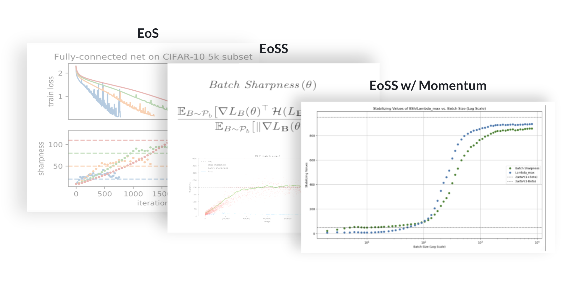
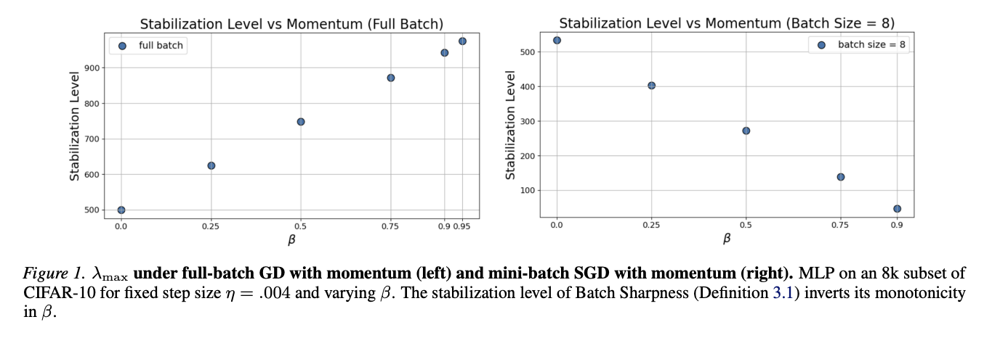
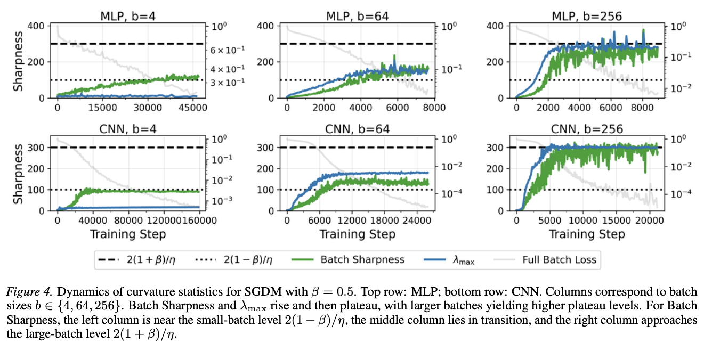

Research note
Momentum, Batch Size, and the Edge of Stochastic Stability

This page is an attempt to explain my optimization research. This was done through the Poggio Lab at MIT and in collaboration with Arseniy, Marc, and Pier. I have often found it hard to explain this project clearly when people ask me about it, especially to someone who is not already familiar with the optimization literature, so this is my attempt to write it out in a more intuitive way.
As a caveat: this was my first serious exposure to academia, and I learned a huge amount from it. I still do not feel like I have a complete grasp of every theoretical explanation and piece of intuition in the paper. I was not the person developing new optimization theory or proving the main mathematical results. My contributions were much more on the experimental and synthesis side: running experiments to test hypotheses, doing ablations, helping shape and communicate the story of the paper, and, of course, a lot of appendix bashing.
So this is not meant to be the most formal or complete explanation. It is just my attempt to explain the main ideas in a way that would make sense to someone seeing this area for the first time.
Let's start with a few ideas you'd see in an introductory CS, AI, or machine learning class.
It's downhill from here
Training a neural network is about changing the model's parameters so that it makes fewer mistakes. A common way to picture this is as a landscape. Every point on the landscape corresponds to a particular setting of the model's parameters, and the height of the landscape tells you how bad the model is at that point.
Gradient descent (GD) is the basic rule for doing that. At each step, you measure which direction points uphill the most, and then move a little in the opposite direction.
In practice, we use stochastic gradient descent (SGD). SGD estimates the downhill direction using only a small random batch of data at each step. That makes training much faster, but also much noisier: each step is an incomplete and slightly different picture of the landscape.
A very common addition is momentum. Instead of choosing every step from scratch, momentum lets optimization carry some memory of previous steps. Intuitively, this adds a kind of inertia: if the optimizer has been moving in a consistent direction for a while, momentum helps it keep going instead of reacting too strongly to every little fluctuation.
How aggressively can we move downhill before the training dynamics become unstable?
Stability, sharpness, and the usual picture
A useful way to think about stability is to imagine a very simple bowl-shaped loss surface. If the bowl is not too steep relative to your learning rate, gradient descent steps toward the bottom and converges. But if the bowl is too steep for the size of your step, the optimizer overshoots, bounces back, overshoots again, and can eventually diverge.
This is part of why sharpness matters. Very loosely, sharpness measures how curved the landscape is around the current point. Sharper regions are more dangerous for a given learning rate because a step that looked reasonable in a flatter region can become too aggressive there.
The traditional story you might take from this is: optimization should stay in the "safe" region where the landscape is flat enough for the learning rate being used.
But a lot of recent work suggests that deep learning often does not stay comfortably inside that safe region. Instead, training often pushes right up against a stability boundary and hovers there.
There are more edges to worry about
In the full-batch setting, this idea is often described as the Edge of Stability (EoS). The rough picture is that training tends to move toward the largest curvature it can sustain without completely blowing up.
Once we move to SGD, though, things get messier. The optimizer isn't just seeing one fixed objective at every step. It's seeing a noisy sequence of mini-batch approximations. So the relevant notion of stability is no longer purely deterministic.
That is where the Edge of Stochastic Stability (EoSS) comes in. Instead of asking only whether the full-batch loss landscape is stable for a given learning rate, we ask what instability boundary the stochastic mini-batch dynamics are actually organizing around.
Why do I care about EoSS?
One reason to care is that it gives a different way of understanding modern deep learning optimization. If training really self-organizes near an instability boundary, then the interesting question is not just whether an optimizer "works," but how close it gets to the edge, what quantity defines that edge, and what effect that has on the kinds of solutions training prefers.
Another reason is that momentum and mini-batches are not niche choices. They are central ingredients of practical deep learning. So if the real operating regime of these methods is instability-limited, understanding that regime feels closer to understanding how training actually behaves in practice than a purely calm, deterministic picture does.
The paper matters because it studies a setting that feels much closer to actual deep learning practice than the simplest optimization cartoons: mini-batches, stochasticity, momentum, aggressive training, and a system operating near an edge rather than deep inside a comfort zone.
The question of the paper
With that in mind, the central question of the paper was:
Once you combine mini-batch noise and momentum, what instability boundary is training actually organizing around?
A natural guess would be that momentum just shifts the usual picture in one clean way. In deterministic settings, momentum is often thought of as stabilizing: it can let you tolerate sharper curvature than vanilla gradient descent.
So maybe the answer should have been simple: just take the usual threshold, adjust it for momentum, and that is the new story.
That would make for a lame paper.

The shortest version of our result is:
Momentum does not have one uniform effect at the stochastic edge. Its effect depends fundamentally on batch size.
Momentum splits EoSS into two regimes
What we found is that SGD with momentum sits in two qualitatively different regimes.
In the large-batch regime, momentum behaves more like the classical deterministic story. It allows training to stabilize at sharper curvature levels.
But in the small-batch regime, where noise matters much more, the story flips. Instead of relaxing the operative curvature constraint, momentum tightens it. In this regime, momentum can bias training toward flatter regions than vanilla SGD.

More intuition I guess
If you do not want to think about formulas, here is the cleanest intuition I know:
In large batches, momentum looks more like the standard deterministic story people already know.
In small batches, momentum interacts with noise in a different way, and that changes where training can stably live.
So the same optimizer can behave like two different things depending on how stochastic the training process is.
What quantity are we actually tracking*?
One subtle but important part of this story is that the usual full-batch top Hessian eigenvalue is not always the right thing to look at in the mini-batch setting.
The paper focuses on a quantity called Batch Sharpness, which is a directional mini-batch curvature statistic. I do not think it is necessary to stare at the exact formula on a first pass. The key point is just that Batch Sharpness is trying to capture a notion of curvature that is more aligned with the actual stochastic dynamics of training than the full-batch Hessian alone.
That matters because in mini-batch training, the optimizer is not evolving on one fixed surface. It is interacting with a distribution of mini-batch geometries. So if you want to understand the edge that SGD with momentum is actually living near, you may need a statistic that sees that stochastic structure.
We need to stage an intervention
A plateau by itself is suggestive, but it is not enough to show that training is really operating near an instability boundary.
So we also use intervention experiments. The idea is to train for a while, stop at a checkpoint, and then make a small hyperparameter change that should be destabilizing if the system is actually close to an edge. For example, we can increase the learning rate, increase the momentum, or decrease the batch size.
When that change pushes Batch Sharpness above the new operating threshold, the run produces a catapult: the loss spikes, the curvature statistics jump, and then the system re-stabilizes near a new plateau. To me, that is much more convincing than a passive plot, because it means the dynamics respond the way you would expect from a system balanced near a real constraint.
The paper also looks at stabilizing interventions, like decreasing learning rate, decreasing momentum, or increasing batch size. Those do not trigger the same catapult. Instead, they can reopen room for progressive sharpening, where Batch Sharpness rises again toward the new, higher threshold.
The mechanism section
The theoretical part of the paper tries to explain why the small-batch regime looks so different from the deterministic momentum story. The short version is that, in the noise-dominated regime, SGD with momentum behaves from a stability perspective like vanilla SGD with a larger effective step size:
eta effective is roughly eta divided by one minus beta.
That helps explain the lower small-batch threshold. If momentum effectively amplifies the step size seen by the stochastic stability calculation, then higher momentum can make the allowable curvature smaller rather than larger. This is the opposite of the full-batch picture, where momentum can raise the deterministic stability threshold.
The important nuance is that this is a stability explanation, not a claim that SGD and SGDM are doing the same thing. The appendix compares SGDM with vanilla SGD at matched effective step size and finds that the curvature statistics can stabilize similarly, but the actual trajectories are still meaningfully different.
SGDM versus Nesterov
The paper studies both heavy-ball momentum, which I have mostly been calling SGDM, and Nesterov acceleration, or SGDN. Both show an EoSS-like regime, and both show the small-batch plateau near the stricter 2(1 - beta) / eta scale.
The large-batch behavior is optimizer-specific. SGDM approaches the heavy-ball deterministic threshold, while Nesterov approaches its own deterministic threshold. Another empirical difference is that Nesterov often reaches the large-batch regime at a smaller batch size than SGDM. So even the transition point between the noisy and deterministic regimes depends on which momentum method you are using.
What the paper does and does not settle
The paper's main empirical claim is that momentum methods operate near an Edge of Stochastic Stability, but the edge depends strongly on batch size. Small batches tighten the curvature constraint; large batches recover something closer to the deterministic momentum picture.
The paper is also careful about what is not fully solved. Batch Sharpness is an instability criterion for vanilla SGD in prior work, but for momentum methods we use it more cautiously as an empirical diagnostic. The experiments strongly suggest it is tracking the relevant regime, but the paper does not prove a complete direct Batch Sharpness criterion for SGDM or SGDN in every setting.
The experiments are also deliberately small enough that these curvature quantities can be computed directly. Most of the main experiments are on CIFAR-10 and SVHN with relatively small models. That is a limitation, but also part of why the paper can inspect the dynamics so closely.